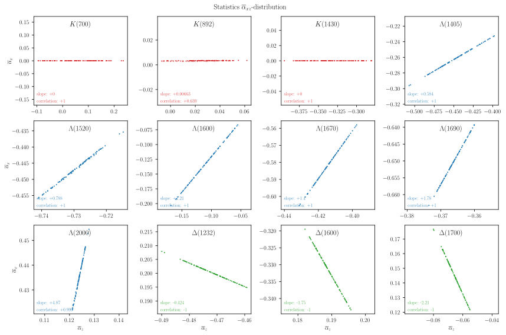
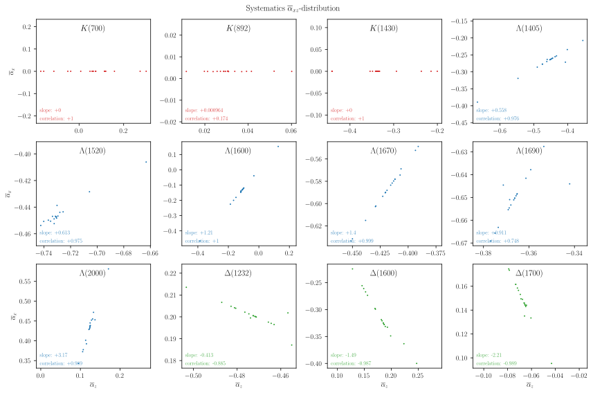

6. Average polarimeter per resonance#
6.1. Computations#
6.2. Result and comparison#
LHCb values are taken from the original study [1]:
\[\begin{split}\begin{array}{l|c|c|rrrrrrrrrrrrrrrrr}
& \textbf{this study} & \textbf{LHCb} & \textbf{1} & \textbf{2} & \textbf{3} & \textbf{4} & \textbf{5} & \textbf{6} & \textbf{7} & \textbf{8} & \textbf{9} & \textbf{10} & \textbf{11} & \textbf{12} & \textbf{13} & \textbf{14} & \textbf{15} & \textbf{16} & \textbf{17} \\
\hline
K(700) & +63 \pm 78_{-235}^{+238} & +60 \pm 660 \pm 240 & -5 & -14 & -55 & -113 & -100 & +57 & -176 & \color{blue}{-235} & \color{red}{+238} & +96 & +51 & +211 & +52 & +11 & -221 & +12 & +1 \\
K(892) & +29 \pm 15_{-17}^{+31} & & +2 & -0 & +2 & -9 & \color{blue}{-17} & +2 & -5 & +23 & \color{red}{+31} & -8 & +5 & +8 & -3 & -2 & +13 & +1 & +10 \\
K(1430) & -339 \pm 28_{-102}^{+139} & -340 \pm 30 \pm 140 & +3 & +3 & -1 & -2 & +45 & +102 & +125 & -9 & -102 & \color{red}{+139} & -15 & \color{blue}{-102} & +7 & +4 & +6 & -1 & +1 \\
\Lambda(1405) & +580 \pm 31_{-122}^{+278} & -580 \pm 50 \pm 280 & +14 & -7 & +3 & +31 & -3 & -30 & \color{blue}{-122} & -22 & +124 & -64 & +31 & \color{red}{+278} & -17 & -8 & +51 & +0 & +7 \\
\Lambda(1520) & +925 \pm 8_{-84}^{+16} & -925 \pm 25 \pm 84 & +7 & +2 & +2 & \color{red}{+16} & -34 & +2 & +8 & +11 & +7 & -3 & +4 & \color{blue}{-84} & +2 & +1 & -6 & +2 & -10 \\
\Lambda(1600) & +199 \pm 51_{-428}^{+499} & -200 \pm 60 \pm 500 & +10 & -5 & +14 & -5 & +21 & +138 & +100 & \color{red}{+499} & \color{blue}{-428} & -140 & +12 & +72 & -21 & -12 & +13 & -19 & +11 \\
\Lambda(1670) & +817 \pm 16_{-46}^{+73} & -817 \pm 42 \pm 73 & +9 & -10 & +12 & +70 & -41 & -5 & \color{red}{+73} & +30 & +47 & \color{blue}{-46} & +12 & +29 & -5 & -3 & +17 & +3 & -18 \\
\Lambda(1690) & +958 \pm 8_{-35}^{+27} & -958 \pm 20 \pm 27 & -3 & +6 & -12 & \color{blue}{-35} & -14 & +22 & \color{red}{+27} & -20 & +3 & -4 & +5 & +18 & -4 & -1 & -1 & -0 & -9 \\
\Lambda(2000) & -573 \pm 9_{-191}^{+124} & +570 \pm 30 \pm 190 & +9 & -1 & +12 & +47 & -24 & -45 & \color{blue}{-191} & +58 & +85 & +78 & -19 & \color{red}{+124} & +6 & +3 & -9 & -2 & -23 \\
\Delta(1232) & +548 \pm 8_{-27}^{+36} & -548 \pm 14 \pm 36 & +9 & +0 & -9 & -14 & +17 & -1 & +10 & \color{red}{+36} & +5 & -11 & +2 & -8 & -2 & -1 & +12 & -0 & \color{blue}{-27} \\
\Delta(1600) & -502 \pm 9_{-112}^{+162} & +500 \pm 50 \pm 170 & +19 & +10 & +6 & +107 & \color{blue}{-112} & +115 & +88 & +49 & \color{red}{+162} & +5 & +51 & +97 & +16 & +9 & -27 & -3 & -53 \\
\Delta(1700) & +216 \pm 18_{-75}^{+42} & -216 \pm 36 \pm 75 & +40 & +4 & -0 & -19 & -2 & +23 & +16 & \color{red}{+42} & +23 & \color{blue}{-75} & -4 & -2 & +18 & +11 & -3 & +5 & -15 \\
\end{array}\end{split}\]
6.3. Distribution analysis#
/home/runner/work/polarimetry/polarimetry/.venv/lib/python3.13/site-packages/kaleido/scopes/base.py:188: DeprecationWarning:
setDaemon() is deprecated, set the daemon attribute instead
6.3.1. XZ-correlations#
It follows from the definition of \(\vec\alpha\) for a single resonance that:
\[\begin{split}
\begin{array}{rcl}
\alpha_x &=& \left|\vec\alpha\right| \int I_0 \sin\left(\zeta^0\right) \,\mathrm{d}\tau \big/ \int I_0 \,\mathrm{d}\tau \\
\alpha_z &=& \left|\vec\alpha\right| \int I_0 \cos\left(\zeta^0\right) \,\mathrm{d}\tau \big/ \int I_0 \,\mathrm{d}\tau
\end{array}
\end{split}\]
This means that the correlation if 100% if \(I_0\) does not change in the bootstrap. This may explain the \(xz\)-correlation observed for \(\overline{\alpha}\) over the complete decay as reported in Average polarimetry values.
\[\begin{split}\displaystyle \begin{aligned}
I_{\Lambda(2000)} \;&=\; \frac{155.425 \sigma_{2}^{2}}{\left|{\sigma_{2} \left(\sigma_{2} - 3.953\right) + 0.527 i \sqrt{\left(\sigma_{2} - 2.05\right) \left(\sigma_{2} - 0.198\right)}}\right|^{2}} \\
\end{aligned}\end{split}\]
\[\begin{split}\displaystyle \begin{aligned}
\alpha_{x,\Lambda(2000)} \;&=\; - 0.572604 \sin{\left(\zeta^0_{2(1)} \right)} \\
\end{aligned}\end{split}\]

